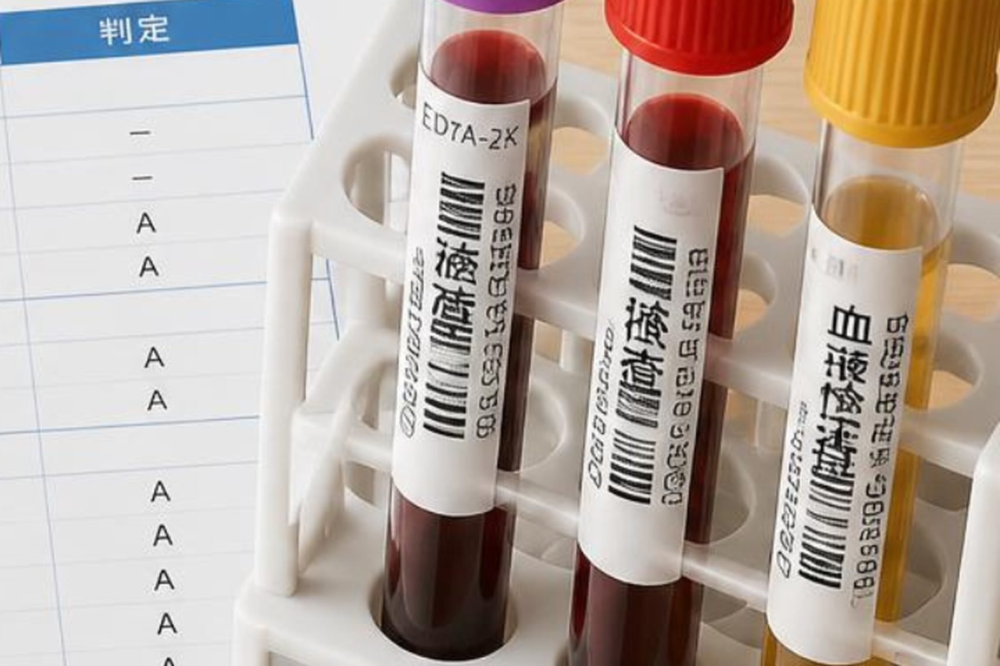
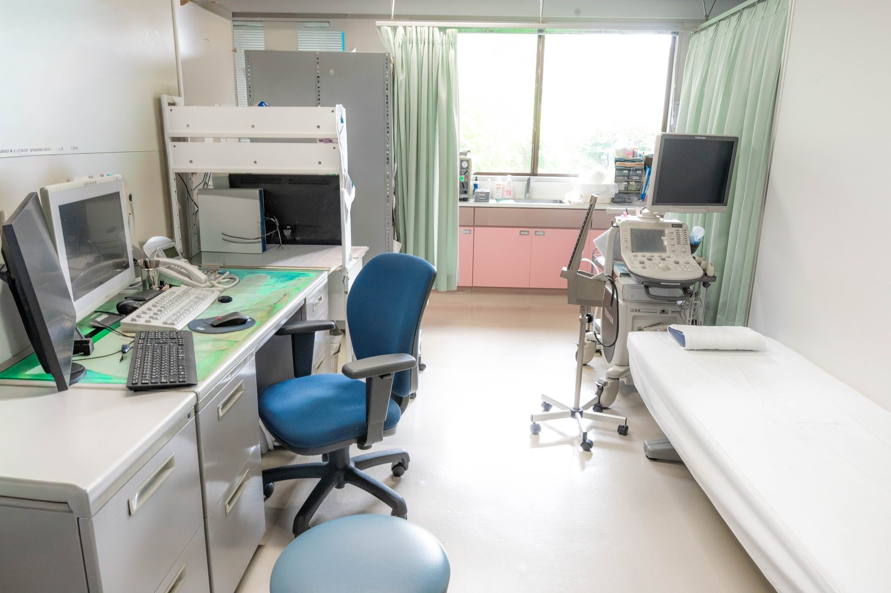

健康診断で「要精密検査」と言われました。症状がなくても受診したほうがいいですか？
A. 回答症状がなくても、一度ご相談いただくことをおすすめします。「要精密検査」は、健診で行える検査の範囲では判断しきれない所見があり、さらに詳しく調べる必要があるという意味です。健診が対象としている生活習慣病やがんの多くは、初期には自覚症状がほとんど出ないとされています。つまり「症状がない＝異常がない」ではなく、症状が出る前の段階で見つかることにこそ健診の意義があると考えられています。判定の言葉によって求められる行動が違いますので、まずは結果の用紙を手元にご確認ください。

「要経過観察」「要再検査」「要精密検査」はどう違うのですか
健診結果の判定は、施設によって表記が少しずつ異なりますが、日本人間ドック・予防医療学会の判定区分などをもとに、おおむね次のように整理されています。
| 項目 | 要経過観察 | 要再検査 | 要精密検査 |
|---|---|---|---|
| 意味 | 基準値からわずかに外れているが、すぐの対応までは求められていない状態 | 同じ検査をもう一度行い、数値が本当に高い（低い）のかを確かめる必要がある状態 | 健診では判断できない所見があり、別の詳しい検査で原因を調べる必要がある状態 |
| 主な目的 | 変化の有無を見守る | 数値の再確認 | 原因の特定 |
| 行う検査の例 | 次回健診での比較、生活習慣の見直し | 血液検査・尿検査・血圧の再測定など、健診と同じ検査 | 内視鏡、超音波（エコー）、心電図の追加検査、画像検査など |
| 受診の目安 | 次回健診まで様子をみることが多い（気になる症状があればご相談を） | 数週間〜数か月以内が目安とされます | できるだけ早めの受診がすすめられます |
症状がないのに受診する意味はありますか
あります。健診が見つけようとしている病気の多くは、初期には症状が出にくいという共通点があります。
- 高血圧・脂質異常・高血糖：血管への負担が続いていても、自覚症状はほとんど出ないことが多いとされています。
- 肝機能・腎機能の異常：かなり進行するまで気づかれにくく、数値の変化が最初のサインになる場合があります。
- がん：国立がん研究センターも、がん検診は症状が出る前に受けることに意義があるとしています。症状が出てから見つかるのとは、その後の選択肢が変わる場合があります。
- 心臓・呼吸器の所見：心電図や胸部エックス線の指摘は、日常生活では気づかない変化を拾っていることがあります。
逆にいえば、精密検査の結果「問題ありませんでした」と分かることにも大きな意味があります。不安を抱えたまま1年待つより、はっきりさせておくほうが安心につながります。
すぐに受診を検討してください
- 判定に「要治療」「至急受診」などの記載がある
- 血圧・血糖・肝機能などの数値に、基準値から大きく外れているという注記がある
- 便潜血検査や喀痰検査、腫瘍マーカーなどで「陽性」「要精密検査」と指摘されている
- 胸痛・息切れ・動悸・むくみ・体重減少・出血など、何らかの症状も出ている
早めの受診をおすすめします
- 「要精密検査」「要再検査」と書かれているが、症状はまったくない
- 昨年も同じ項目を指摘されたが、受診しないままになっている
- 「要経過観察」だが、前回より数値が悪くなっている
- どの項目でどの科にかかればよいのか分からない
何科を受診すればよいですか
迷われた場合は、まず内科にご相談いただくのが分かりやすいと思います。血圧・血糖・脂質・肝機能・腎機能・尿検査などは内科が窓口になりますし、専門的な検査が必要な場合や当院で対応が難しい場合は、適切な医療機関をご紹介します。当院は内科・呼吸器内科・循環器内科・消化器内科（胃腸科）などを標榜しており、健診で指摘されやすい項目の多くをまとめてご相談いただけます。

当院での対応
健診結果を拝見し、どの項目がどの程度気になる所見なのかをご説明したうえで、必要な検査を組み立てます。血液検査・尿検査・心電図・胸部エックス線などは院内で対応しており、胃や大腸の所見については新世代の内視鏡システム（経鼻内視鏡にも対応）を用いた検査もご相談いただけます。健診後の精密検査・再検査は保険診療の対象となる場合が一般的ですが、内容によって扱いが異なりますので、詳しくはお問い合わせください。
- 予約について：ご相談は予約なしの当日受診が可能です。内視鏡検査など事前準備が必要な検査は、診察のうえで日程を決めます。
- 時間の目安：初回のご相談と採血・心電図などであれば、受付から会計までおおむね30〜60分程度をみておいてください（混雑状況により前後します）。
- 朝の時間帯：当院は月〜土の朝7時から診療しています。空腹の状態での採血が必要な場合や、お仕事前に受診したい場合にご利用いただけます。
受診時にお持ちいただきたいもの・伝えていただきたいこと
健診結果の用紙は必ずお持ちください。数値そのものだけでなく、前年までの結果と比べてどう変化しているかが判断のうえでとても重要になります。用紙がないと同じ検査を一からやり直すことになり、余分な時間と費用がかかってしまう場合があります。
- 健診結果の用紙（できれば過去2〜3年分。原本でもコピーでも構いません）
- 健康保険証（マイナ保険証）と、お持ちの方はお薬手帳
- いつ受けた健診か、どの項目を指摘されたか
- 現在治療中の病気、飲んでいるお薬やサプリメントの有無
- 気になる症状があれば、いつから・どんなときに出るか
- ご家族に同じ病気の方がいるかどうか
参考にした情報
健診結果の用紙をお持ちのうえ、お気軽にご相談ください。どの項目から調べるべきかを一緒に整理します。
最終更新：2026年8月26日